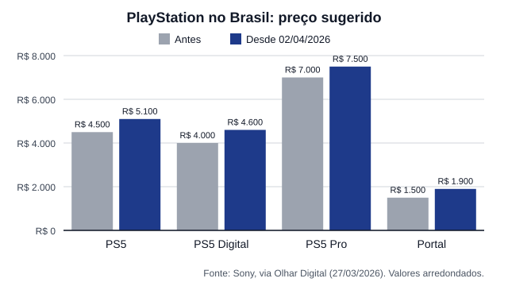

Como a inteligência artificial está mudando o preço da diversão
Consoles e jogos: a conta chegou para quem joga
Antes, um console ficava mais barato com o passar dos anos. Em 2026 aconteceu o contrário:
as três grandes fabricantes subiram os preços de aparelhos lançados há anos, e a
alta da memória aparece como o principal motivo.
Os consoles em 2026
Sony PlayStation 5
Desde , toda a linha PlayStation 5
ficou mais cara no Brasil e no mundo. Nos Estados Unidos, o modelo com leitor de disco
passou a custar 649,99 dólares. No comunicado, a Sony falou em pressões econômicas
globais; a imprensa especializada ligou o reajuste ao custo da memória, além de câmbio e
tarifas. Foi o segundo aumento em menos de um ano.
Preço sugerido da linha PlayStation 5 no Brasil
Modelo
Antes
Desde 02/04/2026
Aumento
PS5 com leitor de disco
R$ 4.499,90
R$ 5.099,90
13,3%
PS5 Edição Digital
R$ 3.999,90
R$ 4.599,90
15,0%
PS5 Pro
R$ 6.999,90
R$ 7.499,90
7,1%
PlayStation Portal
R$ 1.499,90
R$ 1.899,90
26,7%

Preço sugerido no Brasil antes e depois do reajuste de abril de 2026.
Nintendo Switch 2
Lançado em junho de 2025, o Switch 2 teve o primeiro reajuste pouco mais de um ano depois.
No Japão, passou de 49.980 para 59.980 ienes em
. Nos Estados Unidos, foi de 449,99
para 499,99 dólares em , e a
Europa também teve aumento. No Brasil, o console chegou custando cerca de R$ 4.500.
Microsoft Xbox
Em , o Xbox Series S de 512 GB
subiu 100 dólares e os modelos de 1 TB subiram 150 dólares nos Estados Unidos. O Xbox
Series X de 2 TB saiu de linha. Desta vez, a Microsoft culpou diretamente a memória: disse
que o custo de memória e armazenamento dos consoles ficou mais de duas vezes e meia maior e
que deve dobrar de novo até o fim de 2027.
Segundo a consultoria Circana, o preço médio pago por um console nos Estados Unidos chegou
ao maior valor da história em 2026: 529 dólares no Xbox e 597 dólares no PlayStation.
E os jogos?
Os jogos também subiram, mas por outro caminho. Durante a geração atual, o padrão dos grandes
lançamentos era 69,99 dólares. A Nintendo lançou Mario Kart World a 79,99 dólares (cerca de
R$ 500 no Brasil), e a Take-Two confirmou GTA VI por 79,99 dólares na edição padrão e
99,99 dólares na Ultimate, com lançamento em
.
As empresas justificam esses valores principalmente pelo custo de desenvolvimento, não pela
memória. O efeito da IA sobre os jogos é indireto: com o console e o PC mais caros, sobra
menos dinheiro para comprar jogos.
A Pesquisa Game Brasil 2026 mostrou essa mudança de hábito: 26,5% dos entrevistados disseram
que os aumentos mudaram a forma como compram jogos, e 22,4% esperam uma promoção quando um
lançamento sai acima do preço esperado.
O que vem pela frente
O banco Jefferies previu mais duas altas da memória no segundo semestre de 2026: de 40% a 50%
no terceiro trimestre e de 30% a 40% no quarto. Há relatos de que a Sony pode adiar o
PlayStation 6 por causa da falta de memória, e o alívio só é esperado a partir de 2028.